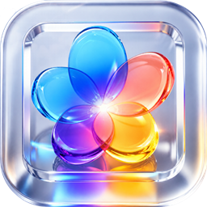
Widglass
macOS-style glass widgets for your Windows desktop.
- Windows 10 & 11
- Free
- Nothing else to install
- Updates itself
First time? If Windows says "Windows protected your PC", click More info → Run anyway. After that, Widglass updates itself.
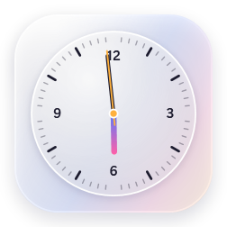
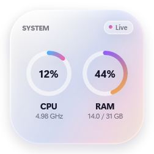
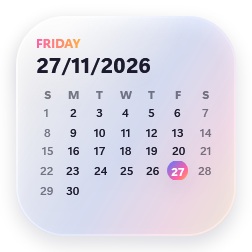
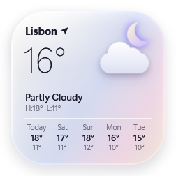
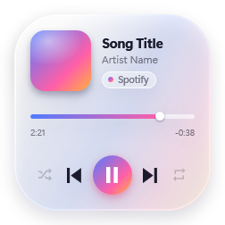
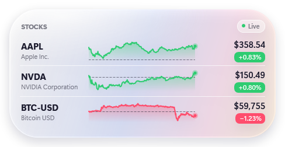
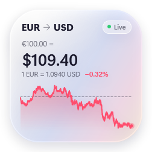
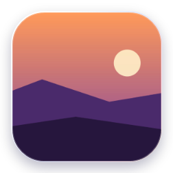
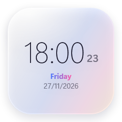
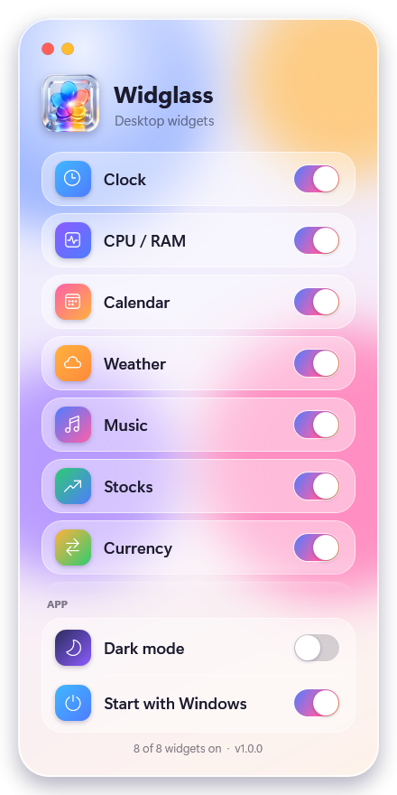
- Eight widgets Clock, CPU / RAM, Calendar, Weather, Music, Stocks, Currency and Photos.
- Live markets Up to 3 stocks or crypto and a currency converter, refreshed every few seconds.
- Photo frames Up to 5 frames on the desktop, each with its own rotating photos.
- Stuck to the desktop Behind your windows, still there on Win+D.
- Drag anywhere Across screens, never cut off, never on top of each other.
- Music Apple Music, YouTube Music and Spotify, with playback controls.
- Light & dark Frosted or smoked glass, in the colors of the logo.
- Always up to date Starts with Windows, lives next to the clock and installs new versions by itself.